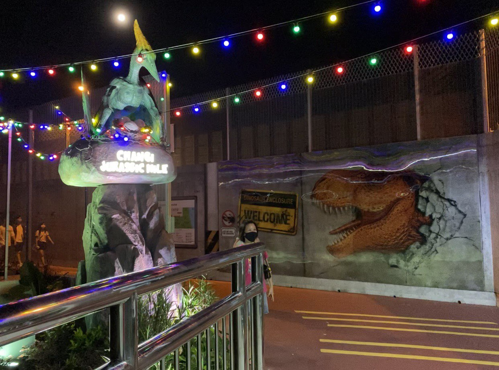

Jurassic Mile

Entrance of Jurassic Mile
A walking trial filled with fun and discoveries! Gigantic and jaw-dropping dinosaurs greet you at your every sight!
Bring your friends and family together, and let's have an adventure while we take our instagram worthy pics along the way! Walk, cycle or scoot, you are guaranteed to have a blast :)
🦖About🦖
Jurassic Mile is Singapore’s newest and largest permanent outdoor display of life-sized dinosaurs. More than 20 different prehistoric creatures from nine different species stretch over 1-kilometre of the cycling and jogging path. Expect to see carnivorous and herbivorous species, defensive dinosaurs, as well as those that fly. The tallest dinosaur stands at almost 5 meters high!